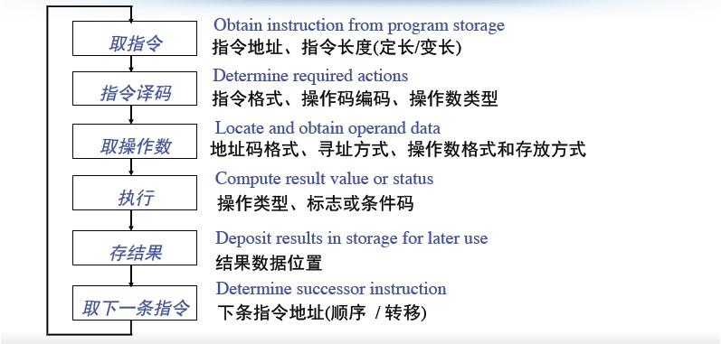
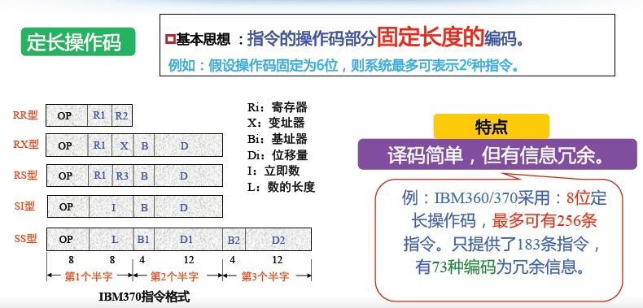
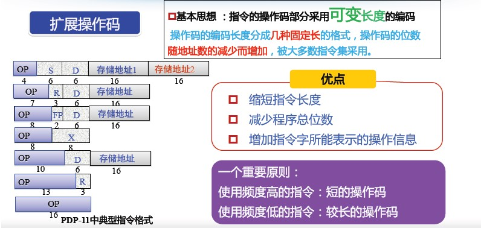
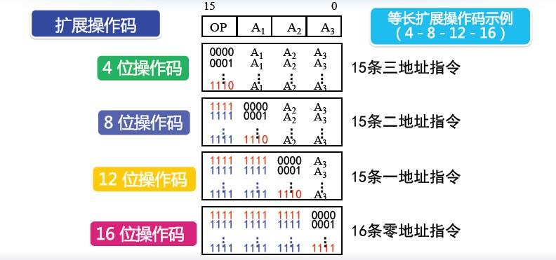

指令系统概述
理解计算机语言，首先要学习的是 指令 和 指令系统 这两个概念。
然后是指令系统的两种类型 CISC 与 RISC，以及他们的优缺点。
Introduction to Instruction Set指令：计算机实现某个基本操作的命令
指令系统：一台计算机的所有指令。计算机硬件和软件的接口及界面
指令系统设计原则
设计原则 特点 完备性 该有的都要有 有效性 简洁、加速常用操作、没有歧义 规整性 对称、匀齐、一致 兼容性 之前/之后的都要能用
兼容性：
- 向上（下）兼容：按某档机器编制的程序，不加修改的就能运行于比它高（低）档的机器
- 向前（后）兼容：按某个时期投入市场的某种型号机器编制的程序，不加修改就能运行于在它之前(后)投入市场的机器
一个较完善的指令系统应该包括
指令 说明 数据传送指令 Load/Save指令 输入输出指令 In/Out指令 算术运算指令 Add等指令 逻辑运算指令 And等指令 系统控制指令 中断等指令 程序控制指令 Jump等指令
CISC与RISC
CISC 与 RISC的比较
名称 定义 特点 缺陷 CISC 复杂指令集计算机
Complex Instruction Set Computer(1) 指令系统复杂
(2) 指令周期长
(3) 各种指令都能访问存储器
(4) 有专用寄存器
(5) 采用微程序控制
(6) 难以进行编译优化生成高效目标代码(1) 指令系统复杂
(2) 各种指令都能访问存储器
(3) 指令周期长
(4) 有专用寄存器
(5) 采用微程序控制
(6) 难以进行编译优化生成高效目标代码RISC 精简指令集计算机
Reduce Instruction Set Computer(1) 简化的指令系统
(2) 以寄存器-寄存器方式工作
(3) 指令周期短
(4) 采用大量通用寄存器，以减少访存次数
(5) 采用组合逻辑电路控制，不用或少用微程序控制
(6) 采用优化的编译系统，力求有效地支持高级语言程序小而精
例：第一代RISC机
- 加州伯克利大学的RISCⅠ
- 斯坦福大学的MIPS
- IBM公司的IBM801
CISC与RISC之争
- 现代处理器大多采用RISC体系结构
• Intel x86为“兼容”需要，保留CISC风格，同时借鉴了RISC思想
指令格式
指令含义指令是指挥计算机实现某个基本操作的命令
指令执行过程

指令设计原则
| 指令设计 | 设计原则 | 描述 |
|---|---|---|
| 指令长度的设计 | 规整性 | 一条指令包含1个操作码和多个地址码 取决于操作码长度、操作数地址长度和地址个数。 定长指令字：所有指令的长度相同。需向最长指令看齐 变长指令字：不同指令的长度不同 |
| 操作码设计 | 有效性 | 每条指令的操作码：只能是一个。 用一定长度的不同编码表示不同的操。 |
| 操作码设计 | 完备性 | 操作码的编码方式决定操作码的长度 定长操作码法 变长/扩展操作码法 操作码长度和指令长度的关系 指令长度是否可变与操作码长度是否可变没有绝对联系 关注程序代码长度时：变长指令字、变长操作码 * 关注性能时：定长指令字、定长操作码 |
| 地址码设计 | 地址码个数与性能和实现难度密切相关 |
操作码设计
长度设计
| 名称 | 基本思想 | 特点 |
|---|---|---|
| 定长操作码法 | 指令的操作码部分固定长度的编码 | 译码简单，但有信息冗余。 |
| 变长/扩展操作码法 | 指令的操作码部分采用可变长度的编码。 操作码的编码长度分成几种固定长的格式， 操作码的位数随地址数的减少而增加，被大多数指令集采用。 |
1.缩短指令长度 2.减少程序总位数 3.增加指令字所能表示的操作信息 一个重要原则： 使用频度高的指令：短的操作码 使用频度低的指令：较长的操作码 |
指令长度是否可变与操作码长度是否可变没有绝对联系


等长扩展码实例
扩展操作码分析题例：某指令系统指令字长16位，每个地址码为6位。若二地址指令15条，一地址指令34条，则剩下零地址指令最多有多少条？
地址码结构
个数：0到多个，看操作码的需要了。地址码个数与性能和实现难度密切相关。
个数多少特点：
地址个数越少,指令长度越短,指令功能越简单 |
分类
零地址指令 |
指令的寻址方式
寻址方式：就是如何找到操作数存放位置的方法
使用目的
* 扩大访存范围 |
址方式的概念
| 分类 | 难度 | 方式 |
|---|---|---|
| 指令寻址 | 简单 | 正常：PC增值 跳转 ( jump / branch / call / return )，同操作数的寻址 |
| 操作数寻址 | 复杂 | 操作数的来源：寄存器 / 外设端口 / 主(虚) 存 / 栈顶 操作数的数据结构：位 / 字节 / 半字 / 字 / 双字 / 一维表 /… |
基本寻址方式
| 分类 | 定义 | 特点 |
|---|---|---|
| 立即数寻址 | Ø 指令地址字段直接给出操作数本身 Ø 立即数寻址只能作为双操作数指令的源操作数 |
1.指令执行时间很短， 无需访存 2.操作数的大小受地址 字段长度的限制 3.广泛使用 |
| 存储器直接寻址 | 操作数在存储器中，指令地址字段 直接给出操作数在存储器中的地址 |
1.处理简单、直接 2.寻址空间受到指令的地址字段长度限制 3.较少使用，8位计算机和一些16位计算机 |
| 寄存器直接寻址 | 操作数在通用寄存器中，指令地址字段 直接给出存放操作数的寄存器编号 |
1. 只需要很短的地址字段 2. 无需访存，指令执行速度快 3. 地址范围有限，可以编程使用的通用寄存器不多 4. 使用最多，是提高性能的常用手段 |
| 存储器间接寻址 | • 操作数和操作数地址都在存储器中 • 指令地址字段直接给出”操作数地址”在存储器中的地址 |
Ø 寻址空间大，灵活，便于编程 Ø 至少需要两次访存才能取到操作数 Ø 执行速度慢 |
| 寄存器间接寻址 | • 操作数在存储器中 • 操作数地址在寄存器中 • 指令地址字段给出的寄存器的内容是操作数在存储器中的地址 |
Ø 比存储器间接寻址少访问 存储器一次 Ø 寻址空间大，使用比较普遍 |
| 偏移寻址 | 直接寻址+寄存器间接寻址 1 相对寻址： EA=(PC)+A 相对于当前指令处 位移量为A的单元 2 基址寻址： EA=(B)+A 相对于基址(B)处 位移量为A的单元 3 变址寻址： EA=(I)+A 相对于形式地址A处位移量为(I)的单元 |
|
| 堆栈寻址 | Ø 堆栈的结构：一段内存区域 Ø 栈底、栈顶 Ø 堆栈指针(SP)：一个特殊寄存器，指向栈顶 PUSH ( 从寄存器到堆栈) POP (从堆栈到寄存器) |